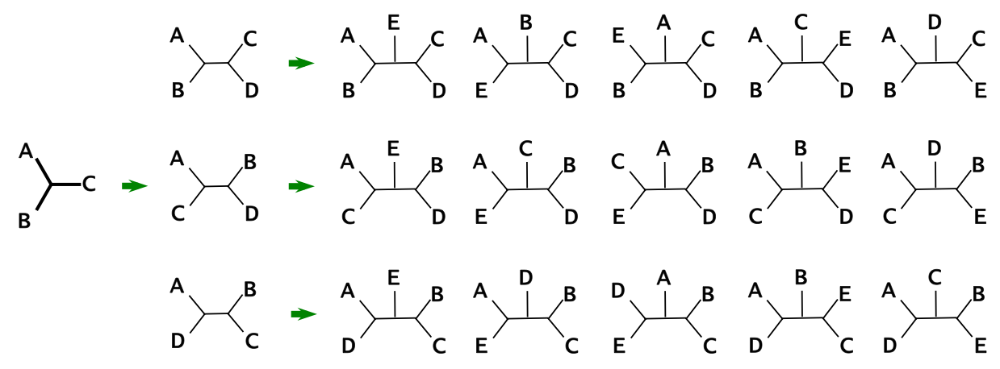
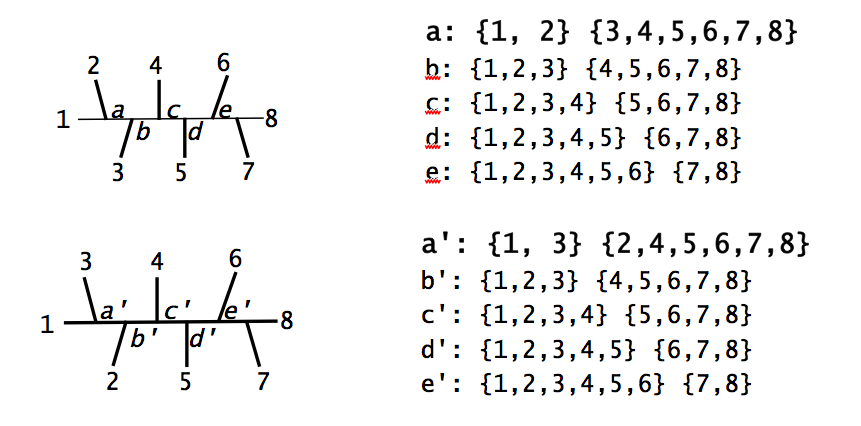
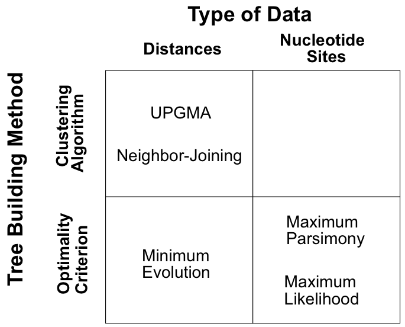
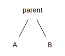
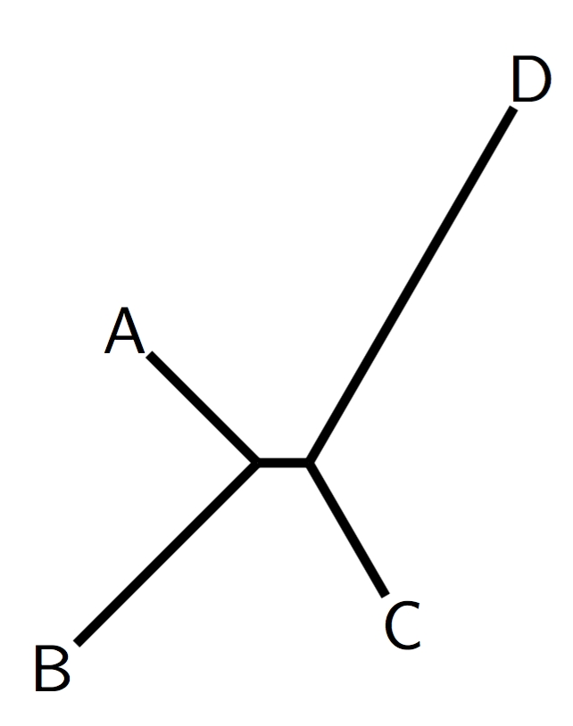
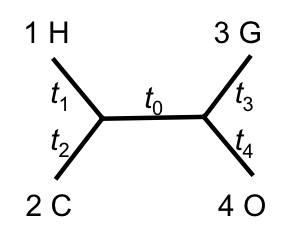
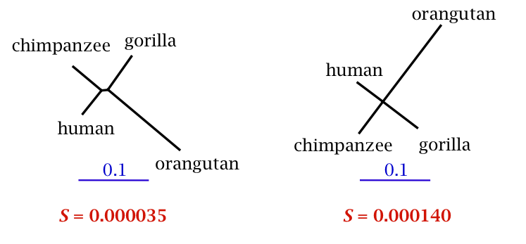

Molecules as Documents of Evolutionary History
Phylogenetics
- Similarity (due to homology) is viewed as evidence of common ancestry
- Homology: the result of inheritance from a common ancestor
- Phylogenetic trees are used to portray relationships based upon common ancestry
- Monophyletic groups (clades) - contain species which are more closely related to each other than to any outside of the group
- Phylogenetics has in recent years become a statistical science based on probabilistic models of evolution (more on this in later lectures).
A typical molecular phylogenetic analysis
- Collect homologous sequences
- Construct a multiple sequence alignment
- Phylogeny reconstruction
- Test the reliability of the estimated phylogeny
- Interpretation and application of phylogenies
Applications of phylogenetics
- Inferring relationships among species and genes
- Estimating divergence times
- Identifying functional elements in comparisons of genomic sequences
- Detecting molecular adaptation
- Forensics
- Studying the emergence and spread of viral pandemics
- many more...
Types of phylogenies and representations

Bifurcating (binary) and multifurcating trees

- In a rooted tree a polytomy is a node with more than 2 children.
- In an unrooted tree a polytomy is a node of degree 4 or greater.
Rooted and unrooted trees

Most phylogeny-reconstruction methods are unable to identify the root of the tree, so unrooted trees are inferred.
This includes the maximum parsimony method, as well as those distance, likelihood and Bayesian methods that do not assume a molecular clock.
Rooting trees using an outgroup

The same unrooted tree

How many trees are there?
For $n$ taxa there are:
$$T_n^{(R)}=(2n−3)(2n−5)\dots(3)(1)$$
rooted, binary trees
| $n$ | #trees | |
| 4 | 15 | enumerable by hand |
| 5 | 105 | enumerable by hand on a rainy day |
| 6 | 945 | enumerable by computer |
| 7 | 10395 | still searchable very quickly on computer |
| 8 | 135135 | about the number of hairs on your head |
| 9 | 2027025 | greater than the population of Auckland |
| 10 | 34459425 | $\approx$ upper limit for exhaustive search |
| 20 | $8.2 \times 10^{21}$ | $\approx$ upper limit of branch-and-bound searching |
| 48 | $3.21 \times 10^{70}$ | $\approx$ the number of particles in the Universe |
| 136 | $2.11 \times 10^{267}$ | number of trees to choose from in the "Out of Africa" data (Vigilante et al. 1991) |
Counting unrooted trees with stepwise addition algorithm

$$T_3 = 1 \rightarrow T_4 = 1 \times 3 \rightarrow T_5 = 1 \times 3 \times 5$$
$T_n = 1 \times 3 \times 5 \times \dots \times (2n−5)$ unrooted trees with $n$ leaves
$T_{20} = 2.2 \times 10^{20}$, $T_{53} \approx$ number particles in the universe
The topological distance between two trees
The partition distance (Robinson and Foulds, 1981) is defined as the total number of bipartitions that are in one tree but not in the other.
Each internal branch defines a bipartition (split) of species.

The distance between these two trees is 2.
The partition distance ranges from 0 to $2(n − 3)$ for $n$ species
Phylogenetic reconstruction
There are essentially two types of data for phylogenetic tree estimation:
- Distance data, usually stored in a distance matrix, e.g. DNA×DNA hybridisation data, morphometric differences, immunological data, pairwise genetic distances
- Character data, usually stored in a character array, e.g. multiple sequence alignment of DNA sequences, morphological characters.
Distances
| A | B | C | D | E |
| A | 0 | 3 | 5 | 6 | 5 |
| B | 3 | 0 | 4 | 7 | 6 |
| C | 5 | 4 | 0 | 5 | 4 |
| D | 6 | 7 | 5 | 0 | 1 |
| E | 5 | 6 | 4 | 1 | 0 |
Characters
| 1 | 2 | 3 | 4 | 5 | 6 | 7 | 8 | 9 |
| A | 1 | 0 | 0 | 0 | 1 | 1 | 0 | 1 | 1 |
| B | 0 | 1 | 0 | 0 | 1 | 1 | 1 | 1 | 1 |
| C | 0 | 0 | 1 | 0 | 0 | 0 | 1 | 1 | 1 |
| D | 0 | 0 | 0 | 1 | 0 | 0 | 0 | 0 | 0 |
| E | 0 | 0 | 0 | 0 | 0 | 0 | 0 | 0 | 0 |
Phylogenetic reconstruction
There are a huge number of possible trees even for small data sets.
We have three options:
- Construct a tree according to some clustering algorithm
- Assign a goodness of fit criterion (an objective function) and find the tree(s) which optimise(s) this criterion
- Admit it is a statistical estimation problem and find the most probable phylogenies under a statistical model.
Phylogenetic reconstruction

Clustering algorithms
Common clustering algorithms are Neighbour-joining and UPGMA (Unweighted Pair-Group Method using Arithmetic averages).
The clustering algorithms are usually very fast, and simple but there is no explicit optimality criterion, so
- the method provides no measure of how good the tree is!
- we do not get any idea about other potential trees - were there any better trees?
Clustering algorithms
- The UPGMA and neighbor-joining (NJ) methods are both
greedy heuristics which join, at each step, the two closest*
sub-trees that are not already joined.
- They are based on the minimum evolution principle.
- An important concept in both of these methods is a pair of
neighbors, which is defined as two nodes that are connected
via a single node:

* NJ uses rate-corrected distances
UPGMA example
Distances
| A | B | C | D |
| A | 0 | | | |
| B | 8 | 0 | | |
| C | 7 | 9 | 0 | |
| D | 12 | 14 | 11 | 0 |
$$d_{B(AC)} = (d_{BA} + d_{BC} )/2 = (8 + 9)/2 = 8.5$$
$$d_{D(AC)} = (d_{DA} + d_{DC})/2 = (12 + 11)/2 = 11.5$$
UPGMA example
$$d_{(ABC)D} =(d_{AD} +d_{BD} +d_{CD})/3=(12+14+11)/3 \approx 12.33$$
UPGMA example
UPGMA produces a rooted tree and assumes that evolution is clock-like,
i.e. it assumes that the rate of substitution is the same on all branches of the tree.
UPGMA weaknesses
Distances
| A | B | C | D |
| A | 0 | | | |
| B | 8 | 0 | | |
| C | 7 | 9 | 0 | |
| D | 12 | 14 | 11 | 0 |
There is a (non clock-like) tree with a different topology that fits the distance matrix perfectly!
Neighbour-joining algorithm
(Saitou and Nei, 1987)
- Most widely-used distance-based method for phylogenetic reconstruction
- UPGMA illustrated that it is not enough to pick the closest neighbors (at least when there is rate heterogeneity across branches)
- Idea: take into account averaged distances to other leaves as well
- Produces an unrooted tree
The basic idea
- We start by computing the “average distance” from i to every other taxon
$$r_i = \frac{1}{n−2} \sum_j d_{ij}$$
- We then compute new corrected distances for all pairs of $(i,j)$:
$$d_{ij}^∗ = d_{ij} − r_i − r_j$$
- We are effectively pushing each node $i$ closer to all other nodes by $r_i$.
The basic idea
$$d_{ij}^∗ = d_{ij} − r_i − r_j$$
The effect is to correct for long branches.
$$d=
\begin{bmatrix}
0 & 8 &7 & 12 \\
8 & 0 & 9 & 14 \\
7 & 9 & 0 & 11 \\
12 & 14 & 11 & 0
\end{bmatrix}$$
$$r = [13.5, 15.5, 13.5, 18.5]$$
$$d^{*}=
\begin{bmatrix}
0 & -21 & -20 & -20 \\
-21 & 0 & -20 & -20 \\
-20 & -20 & 0 & -21 \\
-20 & -20 & -21 & 0
\end{bmatrix}$$

This is the result of the Neighbour-joining algorithm on same distance matrix as used in the UPGMA example.
AB and CD are grouped instead of AC.
Neighbour joining
- We use an algorithm very similar to UPGMA to select the two closest nodes, $i$ and $j$, based on the corrected distances ($d^*$).
- We join these into a cluster and make a new node $k$ to correspond to their ancestor
- the distance to the new node $k$ is computed by $$d_{ik} = \frac{1}{2}(d_{ij} +r_i − r_j)$$
- Nodes $i$ and $j$ are removed from the pool and replaced by $k$.
The uncorrected distances are updated based on the $d_{ik}$ calculation and $d^*$ is then recalculated.
- See Higgs and Attwood (2005; pp166-169) for details.
Time complexity of the clustering algorithms
- Both of these clustering-based algorithms take $O(n^3)$ time once we have the distance matrix.
- There are n steps and in each step we do:
- find the smallest distance
- join these two taxa
- compute the distance from the new ancestor to all others
- Step 1 takes $O(n^2)$ and the other two steps take $O(n)$
Note: There is an alternative (and much harder to follow) formulation of the UPGMA algorithm that takes $O(n^2)$
Least squares distance-based phylogenetics
| $d_{ij}$ | Human | Chimp | Gorilla | Orangutan |
| Human | 0 | | | |
| Chimp | 0.0965 | 0 | | |
| Gorilla | 0.1140 | 0.1180 | 0 | |
| Orangutan | 0.1849 | 0.2009 | 0.1947 | 0 |
$\begin{align*}
S = &(d_{12} - \hat{d}_{12})^2 + (d_{13} - \hat{d}_{13})^2 + \\
&(d_{14} - \hat{d}_{14})^2 + (d_{23} - \hat{d}_{23})^2 + \\
&(d_{24} - \hat{d}_{24})^2 + (d_{34} - \hat{d}_{34})^2 \end{align*}$
$$\hat{d}_{12} = t_1 + t_2, \quad \hat{d}_{13} = t_1 + t_0 + t_3, \dots$$

There are six data points (distances) and five free parameters (branch lengths).
Least squares distance-based phylogenetics
| Tree | $t_0$ | $t_1$ (H) | $t_2$ (C) | $t_3$ (G) | $t_4$ (O) | S |
| ((H,C),G,O) | 0.008840 | 0.043266 | 0.053280 | 0.058908 | 0.135795 | 0.000035 |
| ((H,G),C,O) | 0.0 | 0.46212 | 0.056227 | 0.061854 | 0.138742 | 0.000140 |
| ((H,O),C,G) | 0.0 | 0.46212 | 0.056227 | 0.061854 | 0.138742 | 0.000140 |
| (H,G,C,O) | 0.0 | 0.46212 | 0.056227 | 0.061854 | 0.138742 | 0.000140 |

Reading: Trees and Distance Methods
- Bioinformatics and Molecular Evolution, Higgs and Attwood (2005), sections 8.1 and 8.3
- Computational Molecular Evolution, Ziheng Yang (2006), sections 3.1-3.3
- Biological Sequence Analysis, Durbin et al (1998), sections 7.1-7.3
- An Introduction to Bioinformatics Algorithms, Jones and Pevzner (2004), Chapter 10